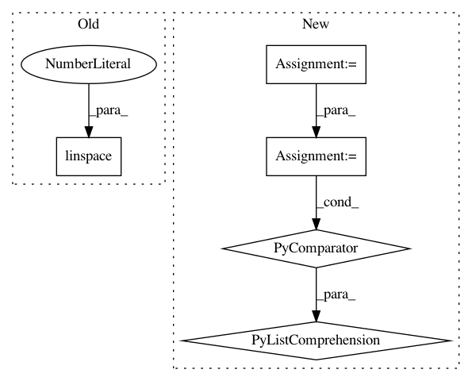

1a135ca9f7d98f63a3183895f27021308da4d9be,grid_parameters.py,,,#,3
Before Change
lls = np.array(lls).reshape(resolution,resolution)
cgs = np.array(cgs,dtype=np.float64).reshape(resolution,resolution)
pb.contourf(xx,yy,lls,np.linspace(-500,560,100),linewidths=2,cmap=pb.cm.jet)
pb.colorbar()
pb.scatter(xx.flatten(),yy.flatten(),10,cgs.flatten(),linewidth=0,cmap=pb.cm.gray)
pb.figure()
After Change
k = GPy.kern.rbf(1)
models = [GPy.models.sparse_GP_regression(X,Y,Z=Z,kernel=k),
GPy.models.sgp_debugB(X,Y,Z=Z,kernel=k),
GPy.models.sgp_debugC(X,Y,Z=Z,kernel=k),
GPy.models.sgp_debugE(X,Y,Z=Z,kernel=k)]
//[m.constrain_fixed("iip") for m in models]
//m.constrain_fixed("white",1e-6)
//[m.constrain_fixed("precision",50) for m in models]
//[m.ensure_default_constraints() for m in models]
xx,yy = np.mgrid[1.5:4:0+resolution*1j,-2:2:0+resolution*1j]
lls = []
cgs = []
for l,v in zip(xx.flatten(),yy.flatten()):
[m.set("lengthscale",l) for m in models]
[m.set("rbf_variance",10.**v) for m in models]
lls.append(models[0].log_likelihood())
cgs.append([m.checkgrad(verbose=0) for m in models])
lls = np.array(lls).reshape(resolution,resolution)
cgs = np.array(zip(*cgs),dtype=np.float64).reshape(-1,resolution,resolution)
In pattern: SUPERPATTERN
Frequency: 3
Non-data size: 5
Instances
Project Name: SheffieldML/GPy
Commit Name: 1a135ca9f7d98f63a3183895f27021308da4d9be
Time: 2013-01-11
Author: james.hensman@gmail.com
File Name: grid_parameters.py
Class Name:
Method Name:
Project Name: enthought/chaco
Commit Name: 921f172b639a9cc81b9374f5fed9c31a8a396908
Time: 2009-02-09
Author: warren.weckesser@651a555e-23ca-0310-84fe-ca9f7c59d2ea
File Name: enthought/chaco/scales/scales.py
Class Name: LogScale
Method Name: ticks
Project Name: scikit-optimize/scikit-optimize
Commit Name: b8f10b387de929bcb250e4750064355e50b44317
Time: 2016-04-18
Author: manojkumarsivaraj334@gmail.com
File Name: examples/plot_gp_minimize_1d.py
Class Name:
Method Name: